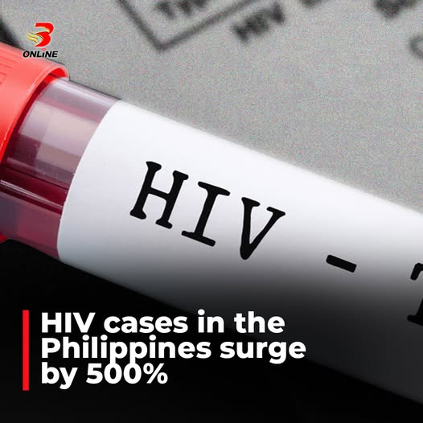

The Joint United Nations Programme on HIV/AIDS (UNAIDS) and the World Health Organization (WHO) support the Philippine Government, its partners, and communities in their urgent efforts to reverse the rising trend of HIV cases. Both agencies also support the Department of Health’s request for President Ferdinand Marcos Jr. to sign an Executive Order that would officially declare HIV a high-priority public health concern, requiring urgent action from all levels of government and society.
The Philippines has the fastest-growing number of HIV cases in the Asia-Pacific region. Every day this year, at least 57 Filipinos have found out they have HIV. The number of new HIV cases went up by 550% from 4,400 in 2010 to 29,600 in 2024. Around 252,800 Filipinos are estimated to be living with HIV in 2025.
In June 2021, UN Member States adopted the UNAIDS 95–95–95 targets for HIV by 2030: 95% of people with HIV know their status, 95% of those who know their status are on antiretroviral therapy (ART), and 95% on ART achieve viral suppression. Achieving the 95-95-95 targets will help reduce HIV transmission. However, the Philippines falls short of these targets. In March 2025, about 139,610 Filipinos (55% of the estimated total) have been diagnosed and are living with HIV, but only 92,712 of them (66% of those diagnosed) are on life-saving antiretroviral therapy. Of those receiving ART, only 41,786 have been tested for HIV viral load to check how well the treatment is working, and 36,630 (40% of those on treatment) have the viral load under control.
In the first quarter of 2025, it is especially worrisome that a third of newly diagnosed HIV cases are among young Filipinos aged 15 to 24 years. These young people will need to be on treatment for life.
“The numbers paint a stark picture that demands our immediate attention and coordinated action across all levels of government and society,” said Dr Louie Ocampo, Country Director, UNAIDS. “We cannot afford to treat HIV as a health sector issue alone. It requires a whole-of-government, whole-of-society response.”
Despite the rapid increase in cases, HIV prevention efforts in the Philippines face significant funding challenges—accounting for only 6%, or ₱211 million, of the total ₱3.6 billion HIV expenditure in 2023. This critical gap has been further impacted by the recent pause in U.S. funding, which has also led to delays in the development and implementation of prevention activities and community-led responses.
The implications of missed opportunities to prevent HIV are profound, affecting various aspects of health and society. Beyond the impact on individuals' lives, the economic burden is substantial, including the costs of lifelong HIV care and other conditions associated with chronic infection. Families and affected communities may face severe financial hardships due to medical expenses and lost income. The rising number of HIV cases will continue to strain health systems, stretching resources and the healthcare workforce in the years ahead.
As the Philippines progresses toward upper-middle-income status and international funding declines, strengthening domestic investment in HIV prevention becomes increasingly critical. UNAIDS and WHO encourage the Philippine National AIDS Council (PNAC) to adopt the HIV Prevention Roadmap. They also urge the Department of Health, the Philippine Health Insurance Corporation (PhilHealth), and other key agencies to ensure universal access to HIV services—including prevention—and to promote a coordinated, multisectoral, and effective national response.
UNAIDS and WHO, together with the Department of Health, strongly support the call for the immediate signing of an Executive Order officially declaring HIV an urgent public health concern. This order will help unite all sectors of society—including government agencies, private companies, and communities—to work together. It will also support broader public education on HIV, increase funding, and ensure the availability of essential HIV-related commodities for people across the country.
“The Philippine National AIDS Council, the Department of Health, and community partners have demonstrated exemplary leadership and commitment in developing this Executive Order. Their collaborative efforts reflect a deep understanding of the urgency and complexity of the HIV epidemic in the country. This Executive Order lays the groundwork for stronger multi-sectoral engagement, increased resource mobilization, and firm political will—essential factors in helping reverse the trajectory of rising HIV cases,” said Dr Eunyoung Ko, Officer-in-Charge, WHO Philippines.
Source: MIMS Philippines Healthcare News & Department of Health
Published: August 2025